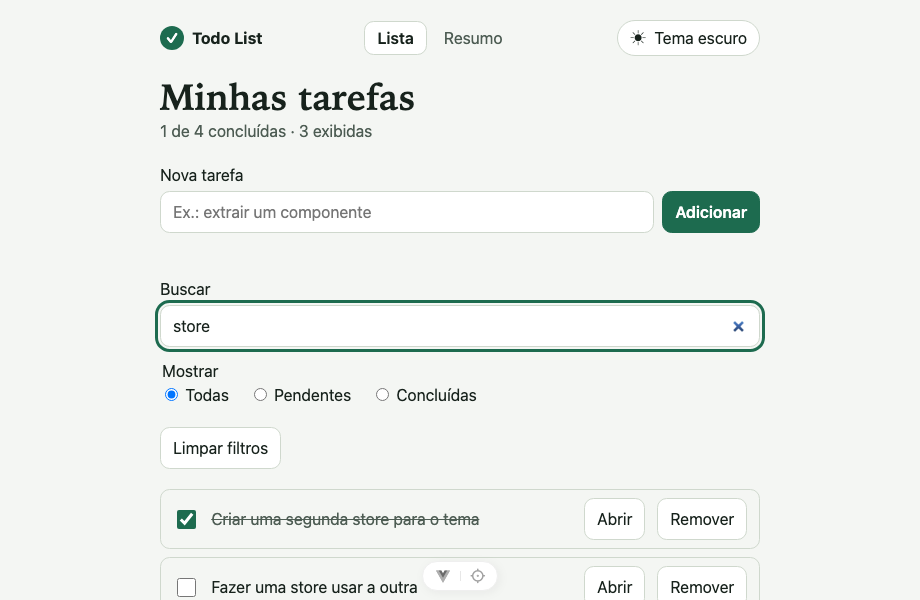

Uma store não é um depósito
A tentação, depois de aprender store, é pôr tudo nela. Hoje fazemos o contrário: a aplicação ganha três stores, cada uma com um assunto — e uma lista do que deve ficar fora de todas.
| Critério | Evidência |
|---|---|
| Três stores | tarefas, filtros e tema no DevTools |
| Uma usa a outra | filtros.visiveis lê a store de tarefas |
| Persistência | Busca e tema sobrevivem ao F5 |
Uma store por assunto, não por tela
| Store | Cuida de | Vive enquanto |
|---|---|---|
tarefas | Dados do servidor | A sessão; vem da API |
filtros | O que a pessoa escolheu ver | Entre visitas (localStorage) |
tema | Aparência | Entre visitas (localStorage) |
Três assuntos, três ciclos de vida. Juntar tudo numa store só faz com que “limpar as tarefas” precise lembrar de não apagar o tema.
// stores/filtros.js
const visiveis = computed(() => {
const tarefasStore = useTarefasStore() // é só chamar
return tarefasStore.tarefas.filter(…)
})filtros.$subscribe((_mutacao, estado) => {
localStorage.setItem(CHAVE, JSON.stringify({
busca: estado.busca,
situacao: estado.situacao,
}))
})Roda a cada mudança de qualquer campo. Serve para persistir, registrar, sincronizar com outra aba.
Nunca confie no que estava gravado. Ao ler do localStorage, valide: outra versão da sua aplicação pode ter escrito ali, e a pessoa pode ter editado à mão.
Três stores, e o que sobrou do App.vue

Filtro aplicado pela store filtros, lista vinda da store tarefas.
const { carregar } = useTarefasStore()
onMounted(carregar)
const { escuro } = storeToRefs(useTemaStore())Oito linhas com os imports. Na etapa 14 este arquivo tinha mais de sessenta.
Busca antes do F5 : "store" (3 tarefas na tela)
Busca depois do F5 : "store" (3 tarefas na tela)
Tema depois do F5 : escuro
localStorage:
todo-list:tema → "escuro"
todo-list:filtros → {"busca":"store","situacao":"todas"}Olhem a aba 2. O App.vue não ficou pequeno porque escrevemos menos: ficou pequeno porque cada coisa achou o seu lugar. Isso é o resultado de três unidades, não de uma.
ObserveO tema é aplicado na criação da store, não num onMounted. Por quê?
Prática: a store de tema e a persistência
- Ponto de partida
- A sua cópia da etapa 22. A pasta da etapa 23 já traz a solução.
- 1
stores/tema.js: o estado, owatche a aplicação do tema, tirados doApp.vue.- 2
stores/filtros.js: movabusca,situacaoevisiveispara lá.- 3
$subscribegravando os filtros nolocalStorage, com validação na leitura.- Evidência
- Busca e tema sobrevivem ao F5; o
App.vuefica com menos de dez linhas de script.
Dica 1
O $subscribe precisa de uma store já criada — chame-o no main.js, depois do use(createPinia()).
Dica 2
Ao ler do localStorage, valide: situacao só pode ser uma das três. Dado gravado é dado externo.
Mostrar solução (após a tentativa)
// stores/tema.js
const escuro = ref((lerTemaSalvo() ?? temaDoSistema()) === 'escuro')
aplicarTema(escuro.value ? 'escuro' : 'claro') // antes da primeira pintura
watch(escuro, (estaEscuro) => {
const tema = estaEscuro ? 'escuro' : 'claro'
aplicarTema(tema)
salvarTema(tema)
})// main.js
app.use(createPinia()).use(router)
guardarFiltros() // $subscribe, depois do Pinia
app.mount('#app')O que não vai para a store
| Pergunta | Se sim | Se não |
|---|---|---|
| Mais de um componente precisa? | candidato a store | estado local |
| Sobrevive à troca de tela? | store | local |
| Faz sentido num link? | endereço | store ou local |
| É dado do servidor? | store de dados | — |
A terceira linha é um aviso contra o exagero: nem tudo que é compartilhado vira store. A nossa busca provavelmente deveria estar no endereço — assim ela caberia num link, como a etapa 17 ensinou.
Fica fora de qualquer store:
- O texto sendo digitado no
TarefaForm— some quando a tarefa é criada - Um
<details>aberto ou fechado - Posição da rolagem, foco, seleção de texto
- Qualquer coisa que só um componente lê
Pôr tudo na store tem um custo real: o estado deixa de morrer junto com o componente. Um formulário cujo rascunho vive na store ainda está preenchido quando a pessoa volta à tela — e isso quase nunca é o que ela espera.
Investigação: o $subscribe só grava
- Digite algo na busca. Veja a chave
todo-list:filtrosmudar em Application › Local Storage. - Apague a chave ali mesmo, sem recarregar.
- Olhe a tela.
Sintoma: não acontece nada. A busca continua lá, a lista continua filtrada. Só no próximo F5 é que o filtro some.
Dica
Quantas vezes o nosso código lê o localStorage? E quantas vezes ele escreve?
Mostrar a causa
O $subscribe é de mão única: ele grava. A leitura acontece uma vez, na criação da store — e a store é criada uma vez por carregamento da página.
É a mesma assimetria da etapa 18: a aplicação pergunta uma vez. Sincronizar nos dois sentidos é outro problema, com solução pronta (pinia-plugin-persistedstate) ou com o evento storage, que avisa quando outra aba muda o valor.
Consequência prática: com a aplicação aberta em duas abas, a segunda não vê o filtro que você mudou na primeira — e, ao fechar, sobrescreve. “Persistido” não quer dizer “sincronizado”.
Pesquisar: organizar stores num projeto que cresce
Tenho três stores Pinia: tarefas (dados da API), filtros
(busca e situação, persistidos) e tema.
Avalie essa divisão citando a documentação oficial:
1. o que está bem dividido e NÃO deveria mudar;
2. quando vale juntar duas stores;
3. quais destes estados talvez devessem estar na URL
em vez de numa store, e por quê.
Não sugira trocar o Pinia por outra biblioteca.| A resposta deve dizer | Sinal de resposta ruim |
|---|---|
| Dividir por assunto está certo | Propõe uma store por tela |
| Juntar só quando mudam sempre juntas | “Quanto menos stores, melhor” |
| Busca e situação cabem na URL | Não percebe (é a etapa 17 voltando) |
| Reconhece o que está bom | Reescreve tudo |
Onde conferir
A pergunta 3 é a mais interessante: ela cruza duas unidades. Se a IA não enxergar, vocês enxergam.
Verificação sem IA · fecho da Unidade 7
- Por que três stores em vez de uma com tudo dentro?
- Cite dois estados que não deveriam ir para uma store.
- Por que apagar a chave do
localStoragenão muda nada na tela?
O que a Unidade 7 deixou pronto
- Estado compartilhado com nome, inspeção e histórico
- State, getters e actions separados
- Três stores por assunto, com persistência
O que vem a seguir
A aplicação está inteira — e ninguém garante que ela continua funcionando depois da próxima mudança. Na Unidade 8, testes: da store, dos componentes e do fluxo completo.